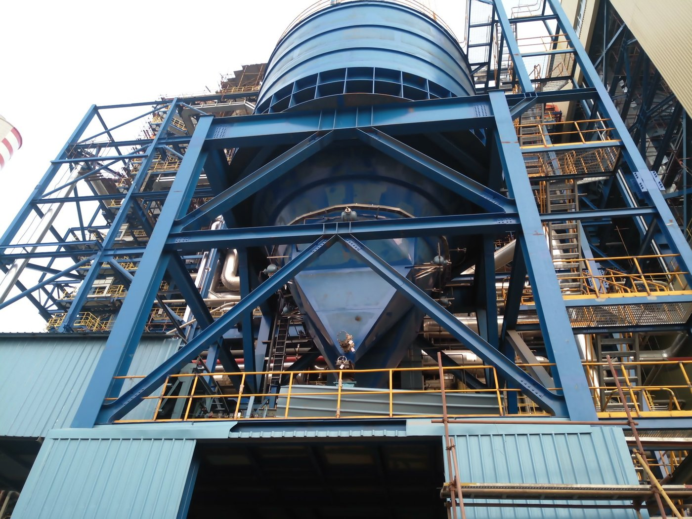
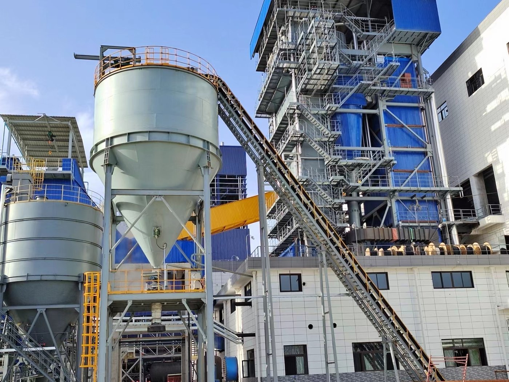

На угольной электростанции можно выделить три критических потока сыпучих материалов: подача угля в котёл, удаление золы и шлака из котла, а также подача сорбентов в систему очистки дымовых газов. Каждый поток отличается температурой, гранулометрией, абразивностью и требованиями к герметичности. В этой статье мы объясним, как подобрать конвейер, питатель, норию и вспомогательное оборудование для каждого из этих процессов, опираясь на опыт Tianyi Machinery в реализации теплоэнергетических проектов.
В этой статье
1. Три потока материалов на угольной ТЭС 2. Транспортировка и подача угля 3. Системы удаления шлака и золы 4. Транспортировка при обессеривании дымовых газов 5. Взрывозащита и герметичные конструкции 6. Вспомогательное и универсальное оборудование 7. Критерии выбора по назначению 8. Референсные проекты ТЭС Часто задаваемые вопросы1. Три потока материалов на угольной ТЭС
Перед выбором оборудования полезно разбить станцию на три потока. Они работают независимо друг от друга, но должны согласовываться по интерфейсам:
- Топливо на входе: разгрузка угля, складирование, рекламация, дробление/грохочение и дозированная подача в мельницы или котёл с циркулирующим кипящим слоем (ЦКС).
- Остатки на выходе: шлак, зола и летучая зола из котла, экономайзера и пылеуловителя, которые подаются в силосы хранения.
- Сорбенты: известняк или известь для обессеривания дымовых газов, а также реагенты для денитрификации.
Неправильно подобранная машина в любом из потоков приведёт к пыли, закупоркам, повышенному износу или аварийным ситуациям.
2. Транспортировка и Подача Угля
Уголь — абразивный, пылящий, горючий и часто влажный материал. Полноценная система подачи угля обычно включает следующее оборудование:
- Ленточные конвейеры (серии TD75, DTII, крутонаклонные DJ): основное оборудование для приёма, перегрузки и складирования угля. Производительность может достигать тысяч тонн в час на расстояния в сотни метров.
- Цепной питатель угля серии TMSD: специально разработан для низкоскоростной регулируемой подачи угля из бункеров котлу или мельнице. Шесть стандартных размеров покрывают широкий диапазон производительности; доступны объёмное дозирование и ядерный весовой контроль.
- Дробилки и грохоты: уменьшают верхний размер и отсеивают мелочь или крупную фракцию перед котлом или мельницей. См. дробильное оборудование и грохоты.
- Магнитные сепараторы: удаляют металлические включения, защищая дробилки и мельницы.
- Буферные и весовые бункеры с весовыми питателями: стабилизируют поток и обеспечивают гравиметрическую подачу в котёл.
3. Системы Удаления Шлака и Золы
После сжигания зола и шлак имеют повышенную температуру, абразивны и пылят. Надёжная линия удаления критична для доступности котла и экологической безопасности. Типичное решение Tianyi — комплект «цепной конвейер en-masse + ковшовая нория + закрытый силос шлака».
| Оборудование | Роль в удалении шлака/золы | Ключевое требование |
|---|---|---|
| Цепной конвейер en-masse | Сбор шлака/золы с пода котла и горизонтальная или наклонная транспортировка | Термостойкость, износостойкая футеровка, герметичный корпус |
| Ковшовая нория | Подъём золы/шлака из подвала в силосы хранения | Термостойкие ковши, износостойкая цепь/лента |
| Цепная ковшовая транспортёрная линия | Непрерывное удаление и подъём шлака в одном агрегате | Прочная цепь и ковши для горячего шлака |
| Закрытый силос шлака/золы | Промежуточное или окончательное хранение | Герметичность, датчики уровня, аэрация, разгрузочные затворы |
В состав системы также входят вибраторы бункерных стенок, пылеуловители, подъёмные механизмы, ручные/электрические затворы, сухие загрузчики золы, вакуумно-давленные предохранительные клапаны и непрерывные датчики уровня.

Угольная ТЭС4. Транспортировка при Обессеривании Дымовых Газов
Современные станции обязаны удалять оксиды серы и твёрдые частицы. Для этого требуется ещё один комплект конвейеров:
- Приём и подготовка известняка: ленточные или цепные конвейеры доставляют известняк к системе мокрого помола.
- Транспортировка известняковой пудры: в системах сухого обессеривания пудру подают из хранилища в точку инжекции. Здесь удобны цепные конвейеры en-masse или шнековые конвейеры благодаря герметичности и точному дозированию.
- Транспортировка гипса: мокрое обессеривание даёт гипсовую суспензию, которая после обезвоживания конвейеризируется в склад. Здесь используются ленточные конвейеры и ковшовые нории.
Tianyi имеет особый опыт в системах приёма известняка и транспортировки известняковой пудры при сухом обессеривании, где герметичная механическая линия предпочтительнее пневмотранспорта при больших непрерывных расходах.
5. Взрывозащита и Герметичные Конструкции
Угольная пыль горючая, а некоторые потоки содержат взрывоопасные газы. Во многих зонах станции открытые конвейеры неприемлемы. Tianyi предлагает две специализированные линейки цепных конвейеров en-masse:
- Газонепроницаемый цепной конвейер серии TMSF: разработан для электростанций, газификации угля и химических производств при транспортировке взрывоопасных или насыщенных газом материалов, таких как уголь, нефтяной кокс и полукокс. Корпус, уплотнения валов и смотровые дверцы рассчитаны на газонепроницаемость; возможно оснащение взрывозащитой по стандартам ATEX или аналогичным.
- Пылегерметичный цепной конвейер серии TMSFc: создан для зон с высокой запылённостью и избыточным давлением — например, выходы угольных мельниц, этажи транспортировки угольных ТЭС и металлургические производства. Конструкция предотвращает утечку пыли и защищает подшипники и приводы от загрязнения.
6. Вспомогательное и Универсальное Оборудование
Несколько других машин Tianyi широко применяются на разных потоках угольных ТЭС:
- Ковшовые нории: поднимают угольную пыль, золу и шлак. Для горючей пыли доступны газонепроницаемые взрывозащищённые ленточно-ковшовые конструкции.
- Шнековые конвейеры: короткие закрытые линии для мелкой золы или угольной пыли; удобны для дозирования.
- Ленточные конвейеры (TD75, DTII, DJ): широко применяются на приёме угля, транспортировке известняка, золы и бурого угля.
- Тяжёлый пластинчатый питатель: транспортирует уголь и известняк производительностью до ~3000 т/ч, особенно при крупнокусковой или ударной загрузке.
- Стальные силосы, затворы и пылеуловители: замыкают линию. См. пылеуловители, затворы и клапаны, а также запасные части.

Конвейерная линия7. Критерии Выбора по Назначению
| Назначение | Рекомендуемое оборудование | Ключевые факторы выбора |
|---|---|---|
| Приём / перегрузка сырого угля | Ленточный конвейер TD75 / DTII / DJ | Производительность, длина, размер кусков, угол наклона, пылеизоляция |
| Бункер угля → котёл / мельница | Питатель угля серии TMSD (цепной en-masse) | Точность дозирования, диапазон скоростей, способ взвешивания, тип котла |
| Уголь / кокс с взрывоопасной пылью | Газонепроницаемый конвейер серии TMSF | Класс взрывозащиты ATEX/NFPA/ГОСТ, газоуплотнение, взрывные клапаны |
| Пыль под избыточным давлением | Пылегерметичный конвейер серии TMSFc | Давление в корпусе, тип уплотнения валов, доступ для очистки |
| Удаление шлака / золы | Цепной конвейер en-masse + ковшовая нория | Температура, абразивность, высота подъёма, интерфейс с силосом |
| Известняк / гипс в системе ОДГ | Ленточный или цепной конвейер | Влажность, производительность, герметичность, непрерывный/периодический режим |
| Крупные куски, сильные удары | Пластинчатый питатель | Ударная нагрузка, абразивность, производительность до 3000 т/ч |
8. Референсные Проекты ТЭС
Tianyi Machinery поставляла конвейерное и вспомогательное оборудование для ряда теплоэнергетических объектов, в том числе:
- Индонезия, Kendari Phase III — угольная ТЭС 2×25 МВт
- Индонезия, South Sumatra No. 1 — новая угольная ТЭС 2×350 МВт
- Индонезия, KPD2 Sinar Mas — энергоблок 1×410 т/пар + 1×70 МВт
- Китай, Yichang Dongyangguang — угольная ТЭС
- Китай, Shenzhen Energy Xianghuangqi — ТЭЦ 2×12 МВт
На этих проектах использовались комбинации ленточных конвейеров, цепных конвейеров en-masse, ковшовых норий, пылеуловителей, питателей, дробилок, грохотов и стальных силосов, что подтверждает применимость описанных выше комплектов оборудования.
Часто Задаваемые Вопросы
Какой конвейер лучше всего подходит для транспортировки угля на электростанции?
Для высокопроизводительной транспортировки сырого угля на большие расстояния — ленточные конвейеры. Для дозированной подачи угля из бункера в котёл или мельницу предпочтителен питатель серии TMSD (цепной конвейер en-masse), так как он закрытый, низкоскоростной и поддерживает объёмное или гравиметрическое дозирование.
Как удаляются шлак и зола из угольного котла?
Шлак и зола обычно собираются цепным конвейером en-masse у пода котла, затем ковшовой норией поднимаются в закрытый силос. Система герметична и дополняется пылеулавливанием, контролем уровня и оборудованием для сухой погрузки золы.
Когда нужен взрывозащищённый или газонепроницаемый конвейер?
Такая конструкция необходима при транспортировке горючей пыли (уголь, нефтяной кокс), при возможности присутствия взрывоопасного газа в атмосфере или при требованиях местных норм ATEX, NFPA, ГОСТ. Для таких условий Tianyi выпускает серию TMSF.
Какое оборудование используется для известняка в системах обессеривания?
В мокрых системах ОДГ для приёма известняка обычно применяются ленточные конвейеры; в сухих системах для известняковой пудры используются цепные или шнековые конвейеры. Обезвоженный гипс транспортируется ленточными конвейерами и ковшовыми нориями. Критичны герметичность и пылеизоляция.
Как подобрать питатель угля для котла ЦКС?
Начните с максимальной непрерывной нагрузки котла и теплотворной способности угля, чтобы рассчитать массовый расход т/ч. Добавьте запас 15–20%, затем выберите питатель, чья объёмная или гравиметрическая производительность покрывает этот расход при насыпной плотности угля. Также учитывайте геометрию выхода бункера и схему точек подачи в котёл.
Нужен проект транспортной системы для ТЭС?
Пришлите нам марку угля, зольность, тип котла, производительность и планировку. Наша инженерная команда подготовит комплектное решение для транспортировки угля, удаления золы или обессеривания — включая конвейеры, питатели, нории, пылеуловители и силосы, рассчитанные под ваш теплоэнергетический проект.
Запросить предложение для ТЭС